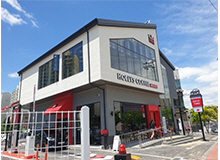
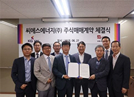
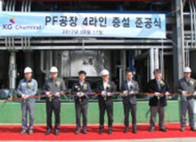
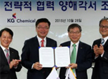
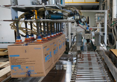
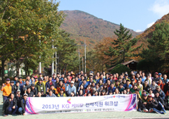
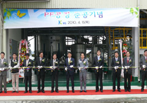

home> 회사소개> 연혁
연혁
"KG케미칼로 새롭게 도약하게 되었습니다."
앞으로의 성장과 도약에 여러분의 아낌없는 성원과 사랑을 부탁드립니다
혁신기(현재~2014)
- 2020
- 11 할리스에프엔비 가족사 편입
- 
- 2019
- 09 KG동부제철 가족사 편입
- 2018
- 12 KG그룹 서소문 사옥 입주(KG타워)
- 06 KG씨에스에너지 가족사 편입
- 
- 2017
- 12 KG ICT 가족사 편입
- 10 국책시험 연구 칼슘제 개발
- 05 KFC 가족사 편입
- 04 KG에너켐 가족사 편입(2차 전지 사업 진출)
- 03 PF공장 4라인 증설
- 
- 2016
- 09 KG올엣 가족사 편입
- 09 국내최초 선충경감 유기질 개발
- 01 조류제거 특화용 응집제 개발 및 자가규격 인증 취득
- 2015
- 12 선충경감 퇴비 개발, 출시
- 11 KG아이티뱅크 & KG써닝라이프 가족사 편입
- 01 PACSM 개발 및 자가규격 인증 취득
- 
- 2014
- 12 동부택배 가족사 편입
- 10 카자흐스탄 현지법인 설립
- 05 PC공장 추가 증설
성장기(2013~2011)
- 2013
- 10 부천공장 매각, 본사 울산 이전
- 10 그룹 CI변경
- 10 하수 인(P)제거 특화용 응집제 PACS 300 개발
- 02 웅진패스원 가족사 편입
- 
- 2012
- 09 녹스-K 차량용요소수 사업 진출
- 2011
- 11 이니시스, 모빌리언스 가족사 편입
- 
도약기(2010~2003)
- 2010
- 10 에코서비스코리아, 이데일리, 제로인 가족사 편입
- 2009
- 10 PC공장 준공 (울산)
- 2008
- 02 옐로우캡, 티지 가족사 편입
- 
- 2005
- 02 시화에너지 가족사 편입
- 2003
- 09 곽재선 회장 취임, KG케미칼로 사명 변경
창업기(2002~1954)
- 1994
- 03 PACS공장 준공 (울산)
- 1993
- 05 PNS공장 준공 (울산)
- 1992
- 05 부두준공 (울산)
- 1989
- 08 기업공개 (KOSPI)
- 1985
- 02 조립복합비료공장 준공 (울산)
- 1982
- 11 황산가리공장 준공 (울산)
- 1974
- 12 조립복합비료공장 준공 (부천)
- 1954
- 12 회사창립